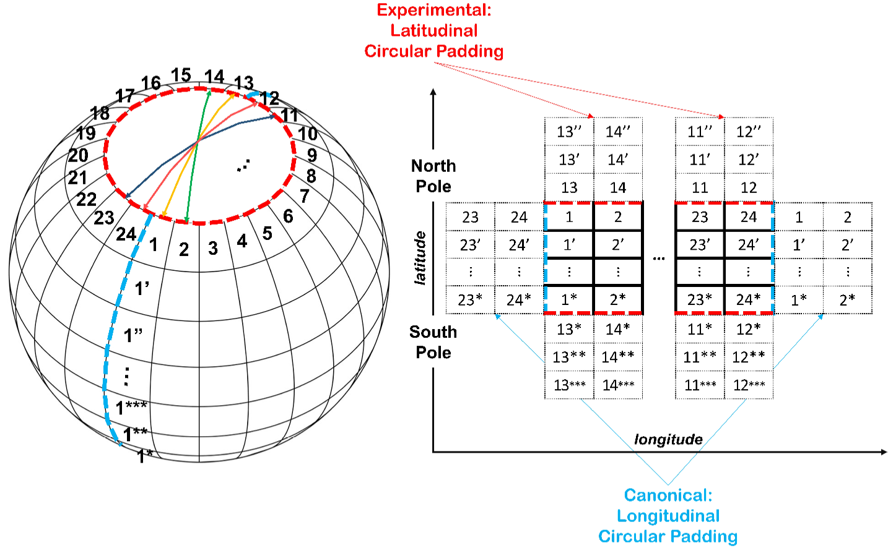

Review: KARINA
KIST에서 KARINA1라는 pure deep learning based climate forecast 모델을 개발했다고 한다.
KARINA
KIST's Atmospheric Rhythm with Integrated Nerual Algorithm의 약자이다.
기존 모델들에 비하여 성능이 떨어지지 않으며 training time을 줄여 efficiency를 확보했다고 한다.
Summary
내가 이해하기로는 두 가지 방법을 제안한 것 같다.
- Geocyclic Padding
- SENet
Geocyclic Padding. 기후 dataset은 정해진 경도, 위도, 그리고 고도에서 측정/계산된 값들로 이루어져 있다. 하지만 지구는 둥글기 때문에, 경도/위도가 지구의 geometry를 반영하도록 data를 전처리 하는 방법 중 하나를 이 논문에서 제안했고, Geocyclic Padding이라고 이름 붙였다.

SENet. Climate data는 고도에 대해 multi-channel을 이루고 있다. SENet은 multi-channel dataset을 다루는데 효과적이라고 알려져 있다고 한다.
Review
이 논문은 현재 preprint 상태이다. 읽어보고나서 아래와 같은 내용들이 궁금해졌다.
-
본문 figure 3에 geocyclic padding과 SENet에 대한 ablation study 결과가 나와있다. (그림의 resolution이 좋지 않으므로 이 포스트에 싣지 않았다.) Uncertainty plot이 있었다면 저자들의 주장에 무게가 더 실렸을 것 같다. 하지만 climate model은 굉장히 무겁기 때문에 uncertainty plot까지 바라는 것은 과하다고 생각이 들기도 한다.
-
Model efficiency 측면에 대해 설명이 조금 부족한 것 같다. Model의 어떠한 부분에서 efficiency가 좋아졌는지, 다른 모델과 efficiency 측면에서 비교는 어떠한지에 대해 간략한 설명이 있으면 좋을 것 같다. 또한 최근 large model의 규제가 FLOPs count 기준으로 이루어지고 있다는 점에서, 해당 metric이 포함된다면 좋을 것이다.
-
ECMWF S2S 모델과 비교했을 때 더 좋은 accuracy를 얻었다고 했지만, GraphCast나 Pangu weather와 비교해서는 day 7 예보를 제외하고는 accuracy가 조금 떨어지는 것 같다 (Table 3). 그럼에도 new benchmark를 정립했다고 abstract에 작성하는게 fair한지는 잘 모르겠다.
-
Cheon, M., Choi, Y.-H., Kang, S.-Y., Choi, Y., Lee, J.-G., & Kang, D. (2024) Karina: An efficient deep learning model for global weather forecast. arXiv preprint arXiv:2403.10555. ↩